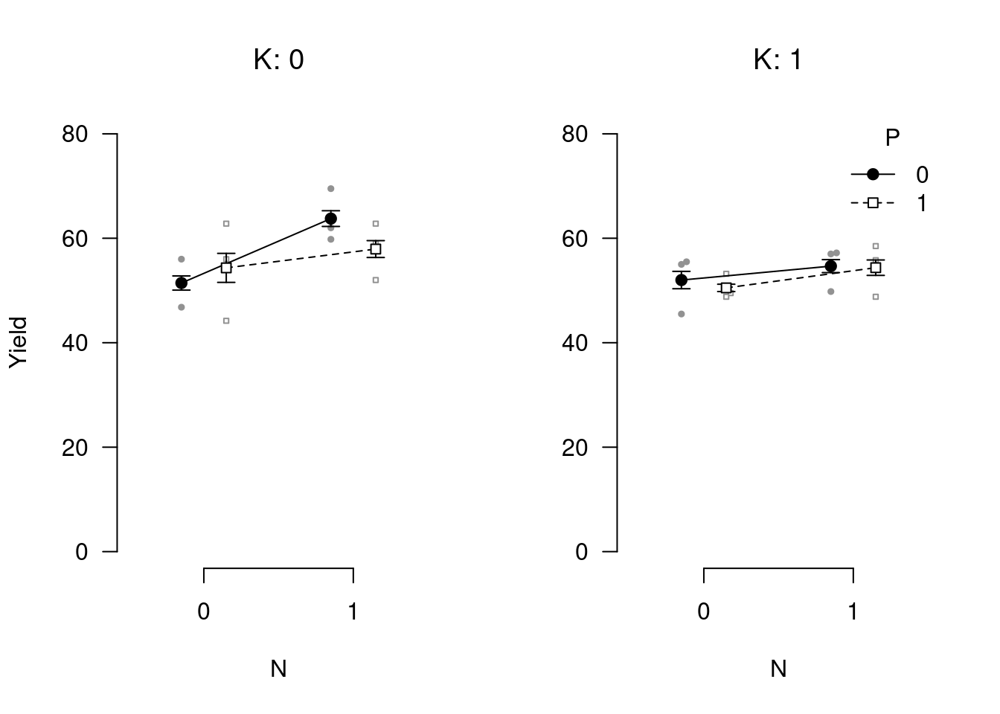

Chapter 11 Reproducible reports with RMarkdown
One of the many things that makes R extremely useful as a data analysis platform is its ability to generate high-quality reproducible reports and documents via R Markdown. Markdown itself is a lightweight markup language, with a plain-text formatting syntax. Markdown documents can be “parsed” to produce documents in a variety of formats, including HTML, PDF, Open Document Type, Microsoft Word, you name it… R Markdown integrates Markdown with R, allowing you to use R to include figures, tables, and R output (as well as the corresponding code, if you wish) directly in the document. A big benefit of this is that can keep your analysis and write-up in one place, so you don’t have to copy-paste results from one place to another (which often results in errors and issues). Including all analysis in the same document allows for completely reproducible research. Anyone with the R Markdown file would be able to reproduce everything in a scientific paper.
R Markdown is extremely flexible and useful. For instance, this book was completely written in R Markdown, with help from the additional bookfown package (https://bookdown.org/).
This chapter provides a brief introduction to R Markdown, as well as the papaja package to produce output in the APA style. As an introduction, there are many things left unsaid, so you will quite likely have to consult other sources to get properly acquainted with all the possibilities of R Markdown. A good reference to R Markdown is the R Markdown cookbook. Another source showcasing the many possibilities of R Markdown is R Markdown: The Definitive Guide. This chapter includes parts of the latter book. To get started with R Markdown, you can create a template from within RStudio, by clicking on the menu File > New File > R Markdown. You can fill in the title of your document, your name, and choose the output format (HTML, PDF, or Word). A new R Markdown document will be generated. If you click on the knit button, just above the file, you will be prompted to save the file, and then the file will be parsed and the output document generated.
11.1 YAML headers
Headers in R Markdown files contain some metadata about your document, which you can customize to your liking. They use a syntax called YAML. Below is a simple example that purely states the title, author name(s), date, and output format.
---
title: "My title"
author: "Mr My full Name"
date: "December 21, 2020"
output: html_document
---You can change the output option to pdf_document, or word_document. Some other arguments you may want to provide in the YAML header are for the bibliography and the style of the output. For example, the previous header can be expanded to
---
title: "My title"
author: "Mr My full Name"
date: "December 21, 2020"
output:
html_document:
toc: true
toc_float: true
number_sections: true
theme: cerulian
bibliography: references.bib
biblio-style: apalike
---This would produce an HTML output with a floating table of contents (toc: true, toc_float: true), numbered sections, and the “cerulian” theme (see e.g. https://www.datadreaming.org/post/r-markdown-theme-gallery/ for some of the available themes). In addition, it tells the R Markdown compiler to look for BibTex references in the references.bib file, and use an APA style for references. There are many things that can be specified in the header file. To make this process easier, you can install the ymlthis package, which also provides an RStudio plugin with a graphical user interface for some common options (see https://ymlthis.r-lib.org/).
Note that if you want to create PDF documents you additionally need a TeX distribution. If you have no use for TeX beyond rendering R Markdown documents, I recommend you use TinyTex. TinyTex can be installed from within R as follows.
if(!"tinytex" %in% rownames(installed.packages())) install.packages("tinytex")
tinytex::install_tinytex()Other, more full-fledged LaTeX MikTeX for Windows, MacTeX for Mac, or TeX Live for Linux.
11.2 Markdown syntax
The text in an R Markdown document is written with the Markdown syntax. Precisely speaking, it is Pandoc’s Markdown. There are many flavours of Markdown invented by different people, and Pandoc’s flavour is the most comprehensive one to our knowledge. You can find the full documentation of Pandoc’s Markdown at https://pandoc.org/MANUAL.html. We strongly recommend that you read this page at least once to know all the possibilities with Pandoc’s Markdown, even if you will not use all of them.
11.2.1 Inline formatting
Inline text will be italic if surrounded by underscores or asterisks, e.g., _text_ or *text*. Bold text is produced using a pair of double asterisks (**text**). A pair of tildes (~) turn text to a subscript (e.g., H~3~PO~4~ renders H3PO4). A pair of carets (^) produce a superscript (e.g., Cu^2+^ renders Cu2+).
To mark text as inline code, use a pair of backticks, e.g., `code`. To include \(n\) literal backticks, use at least \(n+1\) backticks outside, e.g., you can use four backticks to preserve three backtick inside: ```` ```code``` ````, which is rendered as ```code```.
Hyperlinks are created using the syntax [text](link), e.g., [RStudio](https://www.rstudio.com). The syntax for images is similar: just add an exclamation mark, e.g., . Footnotes are put inside the square brackets after a caret ^[], e.g., ^[This is a footnote.].
There are multiple ways to insert citations, and we recommend that you use BibTeX databases, because they work better when the output format is LaTeX/PDF. Section 2.8 of Xie (2016) explains the details. The key idea is that when you have a BibTeX database (a plain-text file with the conventional filename extension .bib) that contains entries like:
@Manual{R-base,
title = {R: A Language and Environment for Statistical
Computing},
author = {{R Core Team}},
organization = {R Foundation for Statistical Computing},
address = {Vienna, Austria},
year = {2017},
url = {https://www.R-project.org/},
}You may add a field named bibliography to the YAML metadata, and set its value to the path of the BibTeX file. Then in Markdown, you may use @R-base (which generates “R Core Team (2021)”) or [@R-base] (which generates “(R Core Team 2021)”) to reference the BibTeX entry. Pandoc will automatically generated a list of references in the end of the document.
11.2.2 Block-level elements
Section headers can be written after a number of pound signs, e.g.,
# First-level header
## Second-level header
### Third-level headerIf you do not want a certain heading to be numbered, you can add {-} or {.unnumbered} after the heading, e.g.,
# Preface {-}Unordered list items start with *, -, or +, and you can nest one list within another list by indenting the sub-list, e.g.,
- one item
- one item
- one item
- one more item
- one more item
- one more itemThe output is:
- one item
- one item
- one item
- one more item
- one more item
- one more item
Ordered list items start with numbers (you can also nest lists within lists), e.g.,
1. the first item
2. the second item
3. the third item
- one unordered item
- one unordered itemThe output does not look too much different with the Markdown source:
- the first item
- the second item
- the third item
- one unordered item
- one unordered item
Blockquotes are written after >, e.g.,
> "I thoroughly disapprove of duels. If a man should challenge me,
I would take him kindly and forgivingly by the hand and lead him
to a quiet place and kill him."
>
> --- Mark TwainThe actual output (we customized the style for blockquotes in this book):
“I thoroughly disapprove of duels. If a man should challenge me, I would take him kindly and forgivingly by the hand and lead him to a quiet place and kill him.”
— Mark Twain
Plain code blocks can be written after three or more backticks, and you can also indent the blocks by four spaces, e.g.,
```
This text is displayed verbatim / preformatted
```
Or indent by four spaces:
This text is displayed verbatim / preformattedIn general, you’d better leave at least one empty line between adjacent but different elements, e.g., a header and a paragraph. This is to avoid ambiguity to the Markdown renderer. For example, does “#” indicate a header below?
In R, the character
# indicates a comment.And does “-” mean a bullet point below?
The result of 5
- 3 is 2.Different flavours of Markdown may produce different results if there are no blank lines.
11.2.3 Math expressions
You can write mathematical expressions using LaTeX syntax. LaTeX is a system for scientific typesetting widely used in academia. It has excellent support for mathematical notation. Below, you will find some examples. For more extensive information on mathematical notation, you can consult e.g. https://en.wikibooks.org/wiki/LaTeX/Mathematics
Inline LaTeX equations can be written in a pair of dollar signs using the LaTeX syntax, e.g., $f(k) = {n \choose k} p^{k} (1-p)^{n-k}$ (actual output: \(f(k)={n \choose k}p^{k}(1-p)^{n-k}\)); math expressions of the display style can be written in a pair of double dollar signs, e.g., $$f(k) = {n \choose k} p^{k} (1-p)^{n-k}$$, and the output looks like this:
\[f\left(k\right)=\binom{n}{k}p^k\left(1-p\right)^{n-k}\]
You can also use math environments inside $ $ or $$ $$, e.g.,
$$\begin{array}{ccc}
x_{11} & x_{12} & x_{13}\\
x_{21} & x_{22} & x_{23}
\end{array}$$\[\begin{array}{ccc} x_{11} & x_{12} & x_{13}\\ x_{21} & x_{22} & x_{23} \end{array}\]
$$X = \begin{bmatrix}1 & x_{1}\\
1 & x_{2}\\
1 & x_{3}
\end{bmatrix}$$\[X = \begin{bmatrix}1 & x_{1}\\ 1 & x_{2}\\ 1 & x_{3} \end{bmatrix}\]
$$\Theta = \begin{pmatrix}\alpha & \beta\\
\gamma & \delta
\end{pmatrix}$$\[\Theta = \begin{pmatrix}\alpha & \beta\\ \gamma & \delta \end{pmatrix}\]
$$\begin{vmatrix}a & b\\
c & d
\end{vmatrix}=ad-bc$$\[\begin{vmatrix}a & b\\ c & d \end{vmatrix}=ad-bc\]
11.3 R code chunks and inline R code
In R Studio, you can insert an R code chunk either using the RStudio toolbar (the Insert button) or the keyboard shortcut Ctrl + Alt + I (Cmd + Option + I on macOS).
There are a lot of things you can do in a code chunk: you can produce text output, tables, or graphics. You have fine control over all these output via chunk options, which can be provided inside the curly braces (between ```{r and }). For example, you can choose hide text output via the chunk option results = 'hide', or set the figure height to 4 inches via fig.height = 4. Chunk options are separated by commas, e.g.,
```{r, chunk-label, results='hide', fig.height=4}The value of a chunk option can be an arbitrary R expression, which makes chunk options extremely flexible. For example, the chunk option eval controls whether to evaluate (execute) a code chunk, and you may conditionally evaluate a chunk via a variable defined previously, e.g.,
```{r}
# execute code if the date is later than a specified day
do_it = Sys.Date() > '2018-02-14'
```
```{r, eval=do_it}
x = rnorm(100)
```There are a large number of chunk options in knitr documented at https://yihui.name/knitr/options. We list a subset of them below:
eval: Whether to evaluate a code chunk.echo: Whether to echo the source code in the output document (someone may not prefer reading your smart source code but only results).results: When set to'hide', text output will be hidden; when set to'asis', text output is written “as-is,” e.g., you can write out raw Markdown text from R code (likecat('**Markdown** is cool.\n')). By default, text output will be wrapped in verbatim elements (typically plain code blocks).collapse: Whether to merge text output and source code into a single code block in the output. This is mostly cosmetic:collapse = TRUEmakes the output more compact, since the R source code and its text output are displayed in a single output block. The defaultcollapse = FALSEmeans R expressions and their text output are separated into different blocks.warning,message, anderror: Whether to show warnings, messages, and errors in the output document. Note that if you seterror = FALSE,rmarkdown::render()will halt on error in a code chunk, and the error will be displayed in the R console. Similarly, whenwarning = FALSEormessage = FALSE, these messages will be shown in the R console.include: Whether to include anything from a code chunk in the output document. Wheninclude = FALSE, this whole code chunk is excluded in the output, but note that it will still be evaluated ifeval = TRUE. When you are trying to setecho = FALSE,results = 'hide',warning = FALSE, andmessage = FALSE, chances are you simply mean a single optioninclude = FALSEinstead of suppressing different types of text output individually.cache: Whether to enable caching. If caching is enabled, the same code chunk will not be evaluated the next time the document is compiled (if the code chunk was not modified), which can save you time. However, I want to honestly remind you of the two hard problems in computer science (via Phil Karlton): naming things, and cache invalidation. Caching can be handy but also tricky sometimes.fig.widthandfig.height: The (graphical device) size of R plots in inches. R plots in code chunks are first recorded via a graphical device in knitr, and then written out to files. You can also specify the two options together in a single chunk optionfig.dim, e.g.,fig.dim = c(6, 4)meansfig.width = 6andfig.height = 4.out.widthandout.height: The output size of R plots in the output document. These options may scale images. You can use percentages, e.g.,out.width = '80%'means 80% of the page width.fig.align: The alignment of plots. It can be'left','center', or'right'.dev: The graphical device to record R plots. Typically it is'pdf'for LaTeX output, and'png'for HTML output, but you can certainly use other devices, such as'svg'or'jpeg'.fig.cap: The figure caption.child: You can include a child document in the main document. This option takes a path to an external file.
Chunk options in knitr can be surprisingly powerful. You are encouraged to read the knitr documentation to discover the possibilities. You may also read Xie, Allaire, and Grolemund (2018), which is freely available online at https://bookdown.org/yihui/rmarkdown/.
There is an optional chunk option that does not take any value, which is the chunk label. It should be the first option in the chunk header. Chunk labels are mainly used in filenames of plots and cache. If the label of a chunk is missing, a default one of the form unnamed-chunk-i will be generated, where i is incremental. I strongly recommend that you only use alphanumeric characters (a-z, A-Z and 0-9) and dashes (-) in labels, because they are not special characters and will surely work for all output formats. Other characters, spaces and underscores in particular, may cause trouble in certain packages, such as bookdown.
If a certain option needs to be frequently set to a value in multiple code chunks, you can consider setting it globally in the first code chunk of your document, e.g.,
```{r, setup, include=FALSE}
knitr::opts_chunk$set(fig.width = 8, collapse = TRUE)
```Besides code chunks, you can also insert values of R objects inline in text. For example:
```{r}
x = 5 # radius of a circle
```
For a circle with the radius `r x`,
its area is `r pi * x^2`.11.3.1 Figures
By default, figures produced by R code will be placed immediately after the code chunk they were generated from. For example:
```{r}
plot(cars, pch = 18)
```You can provide a figure caption using fig.cap in the chunk options. If the document output format supports the option fig_caption: true (e.g., the output format rmarkdown::html_document), the R plots will be placed into figure environments. In the case of PDF output, such figures will be automatically numbered. If you also want to number figures in other formats (such as HTML), please see the bookdown package in https://bookdown.org/yihui/rmarkdown/books.html.
PDF documents are generated through the LaTeX files generated from R Markdown. A highly surprising fact to LaTeX beginners is that figures float by default: even if you generate a plot in a code chunk on the first page, the whole figure environment may float to the next page. This is just how LaTeX works by default. It has a tendency to float figures to the top or bottom of pages. Although it can be annoying and distracting, we recommend that you refrain from playing the “Whac-A-Mole” game in the beginning of your writing, i.e., desparately trying to position figures “correctly” while they seem to be always dodging you. You may wish to fine-tune the positions once the content is complete using the fig.pos chunk option (e.g., fig.pos = 'h'). See https://www.overleaf.com/learn/latex/Positioning_images_and_tables for possible values of fig.pos and more general tips about this behavior in LaTeX. In short, this can be a difficult problem for PDF output.
To place multiple figures side-by-side from the same code chunk, you can use the fig.show='hold' option along with the out.width option. Figure ?? shows an example with two plots, each with a width of 50%.
par(mar = c(4, 4, .2, .1))
plot(cars, pch = 19)
plot(pressure, pch = 17)Two plots side-by-side.
If you want to include a graphic that is not generated from R code, you may use the knitr::include_graphics() function, which gives you more control over the attributes of the image than the Markdown syntax of  (e.g., you can specify the image width via out.width).
```{r, out.width='25%', fig.align='center', fig.cap='...'}
knitr::include_graphics('images/cute-cat-picture.png')
```11.3.2 Tables
The easiest way to include tables is by using knitr::kable(), which can create tables for HTML, PDF and Word outputs.4 Table captions can be included by passing caption to the function, e.g.,
```{r tables-mtcars}
knitr::kable(iris[1:5, ], caption = 'A caption')
```Tables in non-LaTeX output formats will always be placed after the code block. For LaTeX/PDF output formats, tables have the same issue as figures: they may float. If you want to avoid this behavior, you will need to use the LaTeX package longtable, which can break tables across multiple pages. This can be achieved by adding \usepackage{longtable} to your LaTeX preamble, and passing longtable = TRUE to kable().
If you are looking for more advanced control of the styling of tables, you are recommended to use the kableExtra package, which provides functions to customize the appearance of PDF and HTML tables. Formatting tables can be a very complicated task, especially when certain cells span more than one column or row. It is even more complicated when you have to consider different output formats. For example, it is difficult to make a complex table work for both PDF and HTML output. We know it is disappointing, but sometimes you may have to consider alternative ways of presenting data, such as using graphics.
11.4 APA documents with papaja
To help you write documents according to the APA guidelines, you can use the papaja package. This section contains materials adapted from the papaja readme.
11.4.1 Installation
To use papaja you need either an up-to-date version of RStudio or pandoc.
papaja is not yet available on CRAN but you can install it from this repository:
# Install devtools package if necessary
if(!"devtools" %in% rownames(installed.packages())) install.packages("devtools")
# Install the stable development verions from GitHub
devtools::install_github("crsh/papaja")
# Install the latest development snapshot from GitHub
devtools::install_github("crsh/papaja@devel")11.4.2 How to use papaja
Once papaja is installed, you can select the APA template when creating a new Markdown file through the RStudio menus.
APA template selection
If you want to add citations specify your BibTeX-file in the YAML front matter of the document (bibliography: my.bib) and you can start citing. If necessary, have a look at R Markdown’s overview of the citation syntax. You may also be interested in citr, an R Studio addin to swiftly insert Markdown citations.
11.4.2.1 Helper functions to report analyses
The functions apa_print() and apa_table() facilitate reporting results of your analyses. Take a look at the R Markdown-file of the example manuscript in the folder example and the resulting PDF.
Drop a supported analysis result, such as an htest- or lm-object, into apa_print() and receive a list of possible character strings that you can use to report the results of your analysis.
my_lm <- lm(Sepal.Width ~ Sepal.Length + Petal.Width + Petal.Length, data = iris)
apa_lm <- apa_print(my_lm)One element of this list is apa_lm$table that, in the case of an lm-object, will contain a complete regression table. Pass apa_lm$table to apa_table() to turn it into a proper table in your PDF or Word document.
apa_table(apa_lm$table, caption = "Iris regression table.")| Predictor | \(b\) | 95% CI | \(t(146)\) | \(p\) |
|---|---|---|---|---|
| Intercept | 1.04 | \([0.51\), \(1.58]\) | 3.85 | < .001 |
| Sepal Length | 0.61 | \([0.48\), \(0.73]\) | 9.77 | < .001 |
| Petal Width | 0.56 | \([0.32\), \(0.80]\) | 4.55 | < .001 |
| Petal Length | -0.59 | \([-0.71\), \(-0.46]\) | -9.43 | < .001 |
papaja currently provides methods for the following object classes:
| A-B | B-L | L-S | S-Z |
|---|---|---|---|
| afex_aov | BFBayesFactorTop* | lm | summary.aovlist |
| anova | default | lsmobj* | summary.glht* |
| Anova.mlm | emmGrid* | manova | summary.glm |
| aov | glht* | papaja_wsci | summary.lm |
| aovlist | glm | summary_emm* | summary.ref.grid* |
| BFBayesFactor* | htest | summary.Anova.mlm | |
| BFBayesFactorList* | list | summary.aov |
* Not fully tested, don’t trust blindly!
11.4.2.2 Plot functions
Be sure to also check out apa_barplot(), apa_lineplot(), and apa_beeplot() (or the general function apa_factorial_plot()) if you work with factorial designs:
apa_factorial_plot(
data = npk
, id = "block"
, dv = "yield"
, factors = c("N", "P", "K")
, ylim = c(0, 80)
, level = .34
, las = 1
, ylab = "Yield"
, plot = c("swarms", "lines", "error_bars", "points")
)
If you prefer creating your plots with ggplot2 try theme_apa().
11.4.3 Getting help
For an in-depth introduction to papaja, check out the current draft of the manual.
References
You may also consider the pander package. There are several other packages for producing tables, including xtable, Hmisc, and stargazer, but these are generally less compatible with multiple output formats.↩︎